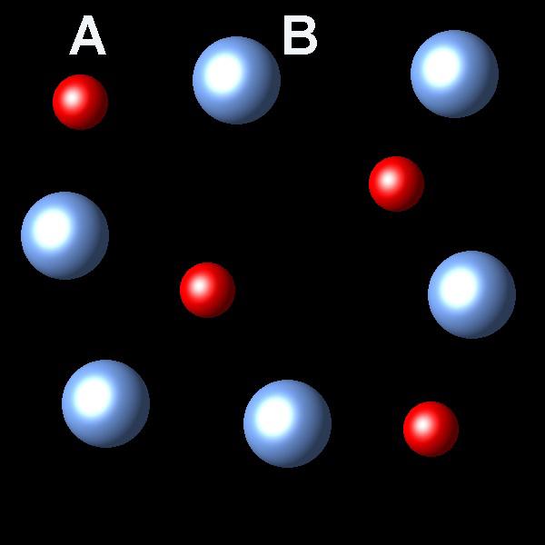
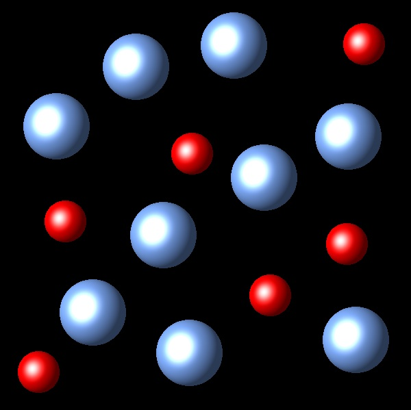
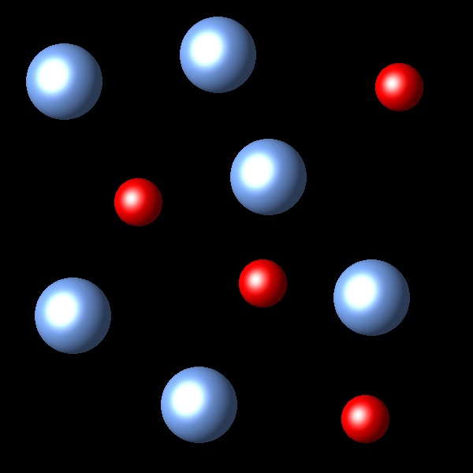
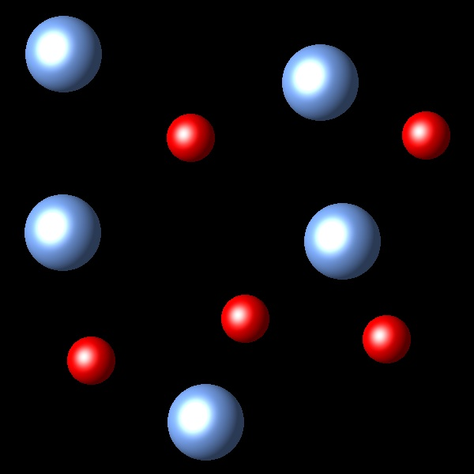

Equilibrio 8
El proceso A(g) → B(g) es exotérmico; ΔH<0. Cuando esta reacción se realiza en un sistema cerrado alcanza un estado de equilibrio A(g) ⇄ B(g) que se puede representar de la siguiente forma:
|  |
Si la temperatura del sistema se aumenta, a presión constante ¿Cuál de las siguientes representaciones describe mejor la situación del sistema una vez se alcance de nuevo el equilibrio?
 |
 |  |  |
Nota: Los cambios de volumen no se han representado en las figuras.